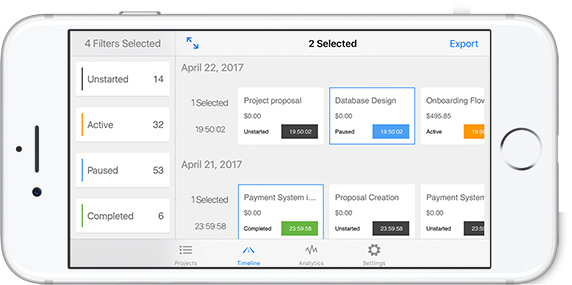
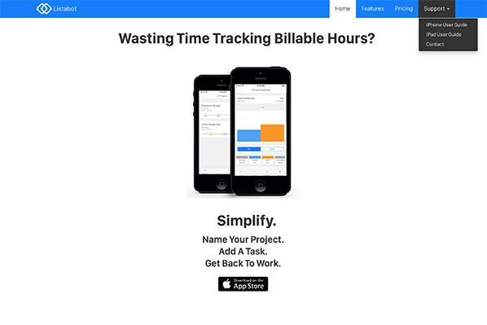

Listabot v1.04 is live in the App Store now!
If you have a plus-sized iPhone or an iPad this update adds support for viewing projects & tasks side by side!

The timeline also has an an improved interace which allows you to filter & select your times at the same time.

Analytics Improvements
Now at a glance you can see how long a task has been worked on, or not worked on.
At the top of each task detail there is a percentage of project time utilized. This let’s you know which tasks are utilizing the most of the currently selected projectss total time.
And of course, you can still select which types of times are rendered by simply tapping Unstarted, Active, Paused, or Completed.

User Guides
The updated user guide for your device will always be shown after updating. You can always look at this again in the Settings tab.
Both iPhone and iPad user guides are also available on the Listabot website under the support tab.
If you are interested in learning about new features as they are released, please join the mailing list or just stay in touch on the Facebook page.